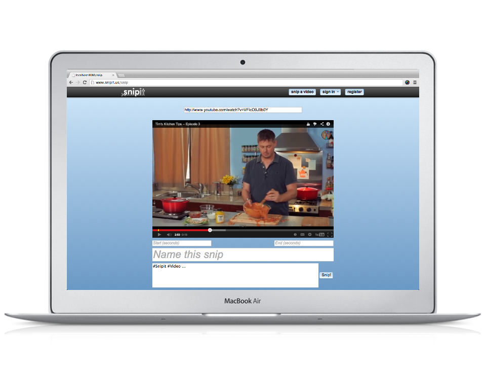

Snipit
I made this with @polyp, @thebritican, and Matt Prosser for our databases final project at Case. Users can take youtube videos and trim them to 5 second videos. The videos can then be posted on facebook walls, or browsed on Snipit where they are served. One day I will pay to host this.
